Oscillatory System with a 2:1 internal resonance
Consider the following system with 2 dofs
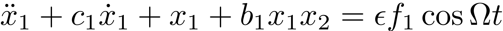
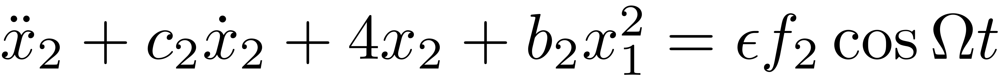
It follows that the system has 1:2 internal resonance. Given damping coefficients 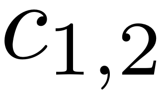, nonlinear spring coefficients 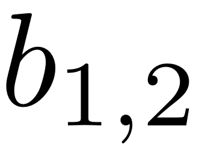 and forcing coefficients 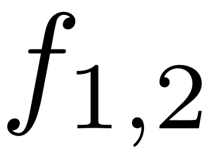, the solution manifold of such system is of two dimension and can be parameterized by 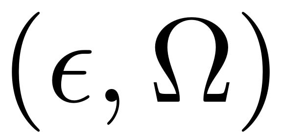 in general. We use this example to demonstrate
Contents
- SSM_isol2ep: continuation of equilibrium points in slow dynamics (corresponding to periodic orbits in regular time dynamics) in either forcing frequency
 or forcing amplitude
or forcing amplitude  . The continuation here starts from an initial solution (isol);
. The continuation here starts from an initial solution (isol); - SSM_ep2HB: continuation of Hopf bifurcation (HB) equilibrium points in slow dynamics (corresponding to Neimark-Sacker or torus (TR) bifurcation periodic orbits in regular time dynamics) in 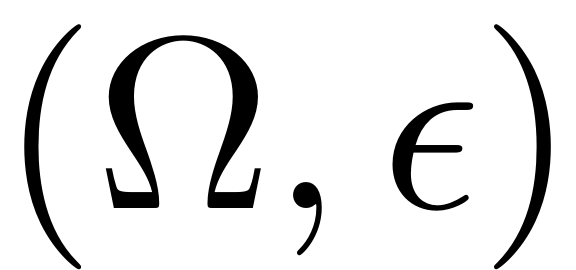. The continuation here starts from a saved ep solution, which is also a HB equilibrium point;
- SSM_ep2SN: continuation of saddle-node (SN) bifurcation equilibrium points in slow dynamics (corresponding to SN bifurcation periodic orbits in regular time dynamics) in . The continuation here starts from a saved ep solution, which is also a SN equilibrium point;
- SSM_HB2po: continuation of periodic orbits in slow dynamics (corresponding to tori in regular time dynamics) in either forcing frequency or forcing amplitude . The continuation here starts from a saved solution, which is a HB equilibrium point;
- SSM_po2po: continuation of periodic orbits in slow dynamics (corresponding to tori in regular time dynamics) in either forcing frequency or forcing amplitude . The continuation here starts from a saved periodic orbit solution;
- SSM_po2SN: continuation of saddle-node periodic orbits in slow dynamics (corresponding to SN tori in regular time dynamics) in . The continuation here starts from a saved po solution, which is also a SN periodic orbit;
- SSM_po2SN: continuation of saddle-node (SN) periorid orbits in slow dynamics in . The continuation here starts from a saved po solution, which is also a SN periodic orbit;
- SSM_po2PD: continuation of periodic-doubling (PD) periorid orbits in slow dynamics (corresponding to PD tori in regular time dynamics?) in . The continuation here starts from a saved po solution, which is also a PD periodic orbit;
clear all
Setup model
m = 1; c1 = 5e-3; c2 = 1e-2; b1 = 1; b2 = 1; f1 = 1; f2 = 0; [mass,damp,stiff,fnl,fext] = build_model(c1,c2,b1,b2,f1,f2); DS = DynamicalSystem(); set(DS,'M',mass,'C',damp,'K',stiff,'fnl',fnl); set(DS.Options,'Emax',5,'Nmax',10,'notation','multiindex')
Forcing
epsilon = 1e-2; kappas = [-1; 1]; coeffs = [fext fext]/2; DS.add_forcing(coeffs, kappas, epsilon);
Linear Modal analysis
[V,D,W] = DS.linear_spectral_analysis();
The first 4 nonzero eigenvalues are given as -0.0025 + 1.0000i -0.0025 - 1.0000i -0.0050 + 2.0000i -0.0050 - 2.0000i
SSM computation
S = SSM(DS); set(S.Options, 'reltol', 1,'notation','multiindex'); resonant_modes = [1 2 3 4]; % choose master spectral subspace mFreq = [1 2]; % internal resonance relation vector order = 3; % SSM expansion order outdof = [1 2]; % outdof for output
SSM_isol2ep:
continuation of equilibrium points from an initial solution*
set(S.FRCOptions, 'initialSolver', 'fsolve'); % initial solution scheme set(S.FRCOptions, 'coordinates', 'cartesian'); % coordinate representation set(S.contOptions, 'PtMX', 200); % continuation setting freqRange = [0.7 1.1]*imag(D(1)); FRC1 = S.SSM_isol2ep('isol_freq_tr_cart',resonant_modes,order,mFreq,'freq',freqRange,outdof);
sigma_out = 0
(near) inner resonance detected for the following combination of master eigenvalues
0 1 1 0
1 0 0 1
2 0 0 0
0 2 0 0
These are in resonance with the follwing eigenvalues of the master subspace
-0.0025 + 1.0000i
-0.0025 - 1.0000i
-0.0050 + 2.0000i
-0.0050 - 2.0000i
sigma_in = 2
Starting parallel pool (parpool) using the 'Processes' profile ...
Connected to parallel pool with 8 workers.
Manifold computation time at order 2 = 00:00:22
Estimated memory usage at order 2 = 1.24E-02 MB
Manifold computation time at order 3 = 00:00:00
Estimated memory usage at order 3 = 2.04E-02 MB
Equation solved.
fsolve completed because the vector of function values is near zero
as measured by the value of the function tolerance, and
the problem appears regular as measured by the gradient.
Run='isol_freq_tr_cart.ep': Continue equilibria along primary branch.
STEP DAMPING NORMS COMPUTATION TIMES
IT SIT GAMMA ||d|| ||f|| ||U|| F(x) DF(x) SOLVE
0 2.22e-14 1.47e+00 0.0 0.0 0.0
STEP TIME ||U|| LABEL TYPE om Rez1 Rez2 Imz1 Imz2 eps
0 00:00:00 1.4716e+00 1 EP 1.0000e+00 -4.6331e-02 2.4582e-01 -4.5057e-02 -1.3493e-01 1.0000e-02
10 00:00:00 1.4593e+00 2 9.9745e-01 -7.3152e-02 1.0509e-01 -3.7283e-03 -2.3117e-01 1.0000e-02
20 00:00:00 1.4408e+00 3 9.9151e-01 -9.7552e-02 1.5971e-02 3.7959e-02 -2.0883e-01 1.0000e-02
24 00:00:01 1.4363e+00 4 HB 9.8785e-01 -1.1063e-01 8.9007e-03 5.0638e-02 -2.0169e-01 1.0000e-02
30 00:00:01 1.4323e+00 5 9.7641e-01 -1.5292e-01 1.6453e-02 7.5912e-02 -2.0716e-01 1.0000e-02
40 00:00:01 1.4965e+00 6 9.1986e-01 -3.8637e-01 1.8126e-01 1.0059e-01 -2.8515e-01 1.0000e-02
50 00:00:01 1.6749e+00 7 8.4211e-01 -6.7137e-01 4.6287e-01 -4.8162e-02 -1.6188e-01 1.0000e-02
60 00:00:01 1.8543e+00 8 7.7252e-01 -8.0808e-01 5.5098e-01 -3.5383e-01 2.0155e-01 1.0000e-02
70 00:00:01 1.9345e+00 9 7.4062e-01 -7.0325e-01 3.1295e-01 -6.6545e-01 5.3588e-01 1.0000e-02
72 00:00:01 1.9349e+00 10 SN 7.4027e-01 -6.7737e-01 2.7047e-01 -6.9271e-01 5.5857e-01 1.0000e-02
72 00:00:01 1.9349e+00 11 FP 7.4027e-01 -6.7737e-01 2.7047e-01 -6.9272e-01 5.5857e-01 1.0000e-02
80 00:00:01 1.8758e+00 12 7.6103e-01 -4.0888e-01 -9.7064e-02 -8.1252e-01 5.8597e-01 1.0000e-02
90 00:00:01 1.7032e+00 13 8.2316e-01 -8.4581e-02 -3.8031e-01 -7.1618e-01 3.2890e-01 1.0000e-02
100 00:00:01 1.5061e+00 14 8.9639e-01 1.0381e-01 -3.4580e-01 -4.4736e-01 1.1064e-02 1.0000e-02
110 00:00:01 1.3924e+00 15 9.4861e-01 1.1191e-01 -1.2710e-01 -1.8388e-01 -8.3432e-02 1.0000e-02
115 00:00:01 1.3693e+00 16 FP 9.5793e-01 7.8288e-02 -4.3188e-02 -9.8575e-02 -4.6216e-02 1.0000e-02
115 00:00:01 1.3693e+00 17 SN 9.5793e-01 7.8266e-02 -4.3152e-02 -9.8535e-02 -4.6188e-02 1.0000e-02
120 00:00:01 1.3413e+00 18 9.4574e-01 4.6585e-02 -8.6126e-03 -5.1675e-02 -1.2239e-02 1.0000e-02
130 00:00:02 1.2438e+00 19 8.7895e-01 2.0275e-02 -5.9680e-04 -2.1134e-02 -1.0285e-03 1.0000e-02
135 00:00:02 9.9014e-01 20 EP 7.0000e-01 8.2644e-03 -3.6484e-05 -8.4032e-03 -6.8622e-05 1.0000e-02
STEP TIME ||U|| LABEL TYPE om Rez1 Rez2 Imz1 Imz2 eps
0 00:00:02 1.4716e+00 21 EP 1.0000e+00 -4.6331e-02 2.4582e-01 -4.5057e-02 -1.3493e-01 1.0000e-02
10 00:00:02 1.4683e+00 22 1.0026e+00 -5.6325e-03 2.5635e-01 -7.4481e-02 3.8663e-02 1.0000e-02
20 00:00:02 1.4696e+00 23 1.0089e+00 3.7491e-02 1.9592e-01 -1.0480e-01 1.0559e-01 1.0000e-02
21 00:00:02 1.4709e+00 24 HB 1.0096e+00 4.0124e-02 1.9450e-01 -1.0786e-01 1.0639e-01 1.0000e-02
30 00:00:02 1.5082e+00 25 1.0220e+00 6.7963e-02 2.2411e-01 -1.6734e-01 1.0012e-01 1.0000e-02
40 00:00:02 1.6353e+00 26 1.0447e+00 5.4554e-02 3.7757e-01 -3.1532e-01 -2.4978e-02 1.0000e-02
50 00:00:02 1.7783e+00 27 1.0604e+00 -5.1924e-02 4.0756e-01 -4.3239e-01 -3.1776e-01 1.0000e-02
60 00:00:02 1.8910e+00 28 1.0698e+00 -2.1801e-01 1.6061e-01 -4.6389e-01 -5.9581e-01 1.0000e-02
70 00:00:02 1.9391e+00 29 1.0739e+00 -3.8153e-01 -2.6377e-01 -3.8812e-01 -6.0079e-01 1.0000e-02
74 00:00:02 1.9372e+00 30 SN 1.0741e+00 -4.2246e-01 -3.8944e-01 -3.4267e-01 -5.2441e-01 1.0000e-02
74 00:00:02 1.9372e+00 31 FP 1.0741e+00 -4.2246e-01 -3.8945e-01 -3.4266e-01 -5.2440e-01 1.0000e-02
80 00:00:02 1.9059e+00 32 1.0730e+00 -4.7399e-01 -5.5431e-01 -2.2964e-01 -2.8291e-01 1.0000e-02
90 00:00:02 1.8020e+00 33 1.0673e+00 -4.5854e-01 -5.1098e-01 -5.3717e-02 1.0048e-01 1.0000e-02
100 00:00:02 1.6645e+00 34 1.0571e+00 -3.5199e-01 -2.5723e-01 6.9396e-02 2.7015e-01 1.0000e-02
110 00:00:03 1.5412e+00 35 1.0441e+00 -2.0847e-01 -4.4822e-02 1.0646e-01 2.0147e-01 1.0000e-02
118 00:00:03 1.4863e+00 36 SN 1.0380e+00 -1.1200e-01 9.9684e-03 8.4132e-02 8.5637e-02 1.0000e-02
118 00:00:03 1.4863e+00 37 FP 1.0380e+00 -1.1200e-01 9.9692e-03 8.4130e-02 8.5630e-02 1.0000e-02
120 00:00:03 1.4806e+00 38 1.0415e+00 -7.5420e-02 9.3264e-03 6.3921e-02 3.8295e-02 1.0000e-02
130 00:00:03 1.5334e+00 39 1.0834e+00 -3.1001e-02 1.3279e-03 2.9174e-02 3.3935e-03 1.0000e-02
133 00:00:03 1.5565e+00 40 EP 1.1000e+00 -2.5665e-02 7.9694e-04 2.4406e-02 1.9478e-03 1.0000e-02
FRCs on parametrisation space:
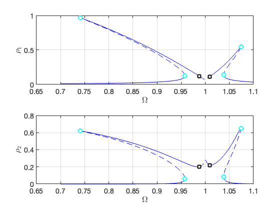 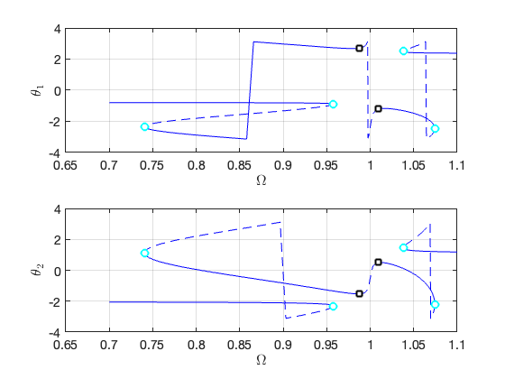FRCs on physical space:
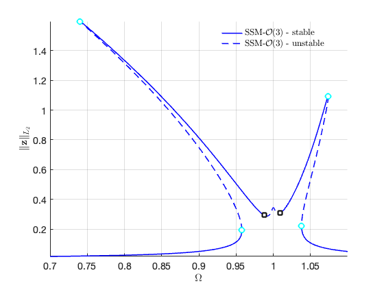 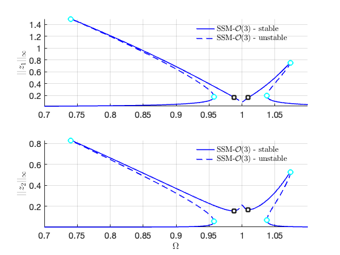SSM_ep2HB:
continuation of Hopf bifurcation equilibrium points
set(S.contOptions, 'h_min', 1e-3); % coordinate representation epsRange = [0.01 5]*epsilon; HBlab = 4; % or you use HBlabs = coco_bd_labs(bd, 'HB') to find it FRC2 = S.SSM_ep2HB('HB_tr_cart','isol_freq_tr_cart',HBlab,{freqRange,epsRange},outdof);
Run='HB_tr_cart.ep': Continue Hopf equilibria from label 4 of run isol_freq_tr_cart.
STEP DAMPING NORMS COMPUTATION TIMES
IT SIT GAMMA ||d|| ||f|| ||U|| F(x) DF(x) SOLVE
0 4.73e-10 1.75e+00 0.0 0.0 0.0
STEP TIME ||U|| LABEL TYPE om eps Rez1 Rez2 Imz1 Imz2
0 00:00:00 1.7502e+00 1 EP 9.8785e-01 1.0000e-02 -1.1063e-01 8.9007e-03 5.0638e-02 -2.0169e-01
9 00:00:00 1.8472e+00 2 EP 9.6773e-01 5.0000e-02 -2.2843e-01 -1.0969e-01 1.7130e-01 -4.1531e-01
STEP TIME ||U|| LABEL TYPE om eps Rez1 Rez2 Imz1 Imz2
0 00:00:00 1.7502e+00 3 EP 9.8785e-01 1.0000e-02 -1.1063e-01 8.9007e-03 5.0638e-02 -2.0169e-01
10 00:00:00 1.7322e+00 4 9.9653e-01 1.6005e-03 -4.2681e-02 5.0450e-02 -6.0246e-03 -5.2990e-02
20 00:00:00 1.7327e+00 5 9.9943e-01 7.1494e-04 -1.9782e-02 3.6466e-02 -1.5449e-02 -1.9314e-02
30 00:00:00 1.7337e+00 6 1.0003e+00 7.0551e-04 -1.6565e-02 3.6216e-02 -1.8425e-02 -1.8986e-02
40 00:00:01 1.7347e+00 7 1.0009e+00 7.8230e-04 -1.5173e-02 3.9680e-02 -2.1812e-02 -1.9937e-02
50 00:00:01 1.7441e+00 8 1.0043e+00 2.3995e-03 -1.8535e-03 9.6919e-02 -5.3519e-02 -5.2324e-04
60 00:00:01 1.7994e+00 9 1.0116e+00 1.4772e-02 5.7628e-02 2.2774e-01 -1.2764e-01 1.5409e-01
67 00:00:01 1.9482e+00 10 EP 1.0194e+00 5.0000e-02 1.3637e-01 3.7684e-01 -2.1366e-01 3.8628e-01
Bifurcations occur for the following forcing parameters:
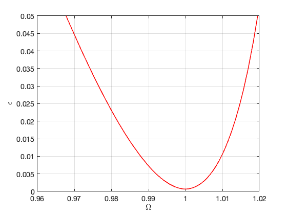Bifurcations in parametrisation space:
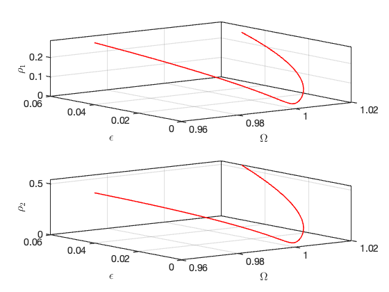 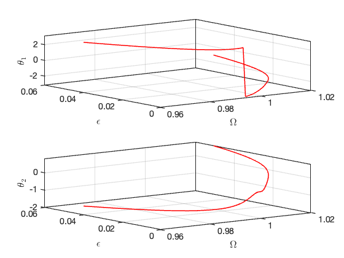Bifurcations in physical space:
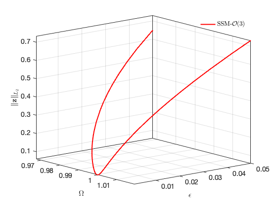 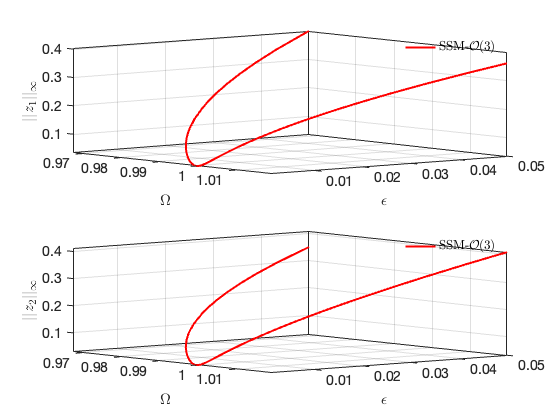SSM_ep2SN:
continuation of saddle-node bifurcation equilibrium points
SNlab = 30; FRC3 = S.SSM_ep2SN('SN_tr_cart','isol_freq_tr_cart',SNlab,{freqRange,epsRange},outdof);
Run='SN_tr_cart.ep': Continue saddle-node equilibria from label 30 of run isol_freq_tr_cart.
STEP DAMPING NORMS COMPUTATION TIMES
IT SIT GAMMA ||d|| ||f|| ||U|| F(x) DF(x) SOLVE
0 1.43e-08 2.18e+00 0.0 0.0 0.0
STEP TIME ||U|| LABEL TYPE om eps Rez1 Rez2 Imz1 Imz2
0 00:00:00 2.1801e+00 1 EP 1.0741e+00 1.0000e-02 -4.2246e-01 -3.8944e-01 -3.4267e-01 -5.2441e-01
10 00:00:00 1.7795e+00 2 1.0231e+00 2.0562e-03 -1.1706e-01 -1.0021e-01 -7.0306e-02 -8.8809e-02
20 00:00:00 1.7495e+00 3 1.0118e+00 9.2270e-04 -5.9827e-02 -5.1483e-02 -1.7282e-02 -1.6364e-02
30 00:00:00 1.7448e+00 4 FP 1.0096e+00 7.0614e-04 -4.3675e-02 -3.1475e-02 2.9996e-04 7.1269e-03
30 00:00:00 1.7448e+00 5 1.0096e+00 7.0743e-04 -4.3137e-02 -3.0346e-02 1.2777e-03 8.3480e-03
40 00:00:00 1.7472e+00 6 1.0117e+00 9.8313e-04 -4.3556e-02 -1.9456e-02 1.3044e-02 2.1496e-02
50 00:00:00 1.7602e+00 7 1.0206e+00 2.8826e-03 -6.4212e-02 -7.6223e-03 3.7424e-02 4.3857e-02
60 00:00:00 1.8175e+00 8 1.0495e+00 1.7498e-02 -1.4724e-01 2.2904e-02 1.1779e-01 1.1777e-01
68 00:00:00 1.9184e+00 9 EP 1.0792e+00 5.0000e-02 -2.5691e-01 6.7255e-02 2.2103e-01 2.3164e-01
STEP TIME ||U|| LABEL TYPE om eps Rez1 Rez2 Imz1 Imz2
0 00:00:00 2.1801e+00 10 EP 1.0741e+00 1.0000e-02 -4.2246e-01 -3.8944e-01 -3.4267e-01 -5.2441e-01
4 00:00:00 2.8016e+00 11 EP 1.1000e+00 1.9116e-02 -6.7732e-01 -7.3953e-01 -5.4341e-01 -9.5562e-01
Bifurcations occur for the following forcing parameters:
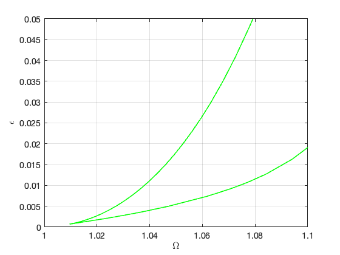Bifurcations in parametrisation space:
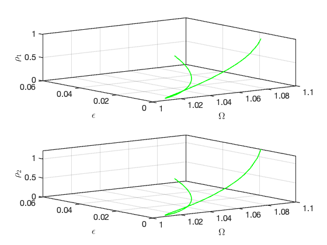 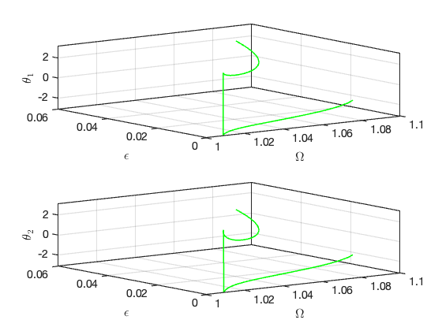Bifurcations in physical space:
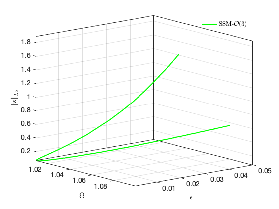 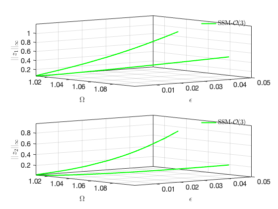SSM_HB2po:
continuation of periodic orbits from HB equilibrium point
set(S.contOptions, 'NAdapt', 2, 'PtMX', 1500, 'h_max', 5, 'bi_direct', false); set(S.FRCOptions, 'sampStyle', 'uniform'); set(S.FRCOptions, 'nPar', 51); S.SSM_HB2po('HBpo1_tr_cart','isol_freq_tr_cart',HBlab,'freq',[0.97 1.02],outdof,'saveICs');
Run='HBpo1_tr_cart.po': Continue periodic orbits born from a HB point with label 4 of run isol_freq_tr_cart.
STEP DAMPING NORMS COMPUTATION TIMES
IT SIT GAMMA ||d|| ||f|| ||U|| F(x) DF(x) SOLVE
0 6.79e-06 2.74e+02 0.0 0.0 0.0
1 1 1.00e+00 1.60e-03 8.74e-08 2.74e+02 0.0 0.0 0.0
2 1 1.00e+00 2.67e-05 2.44e-11 2.74e+02 0.0 0.0 0.0
3 1 1.00e+00 7.93e-08 8.16e-15 2.74e+02 0.0 0.0 0.0
STEP TIME ||U|| LABEL TYPE om po.period eps
0 00:00:00 2.7394e+02 1 EP 9.8785e-01 1.9370e+02 1.0000e-02
10 00:00:00 2.7399e+02 2 9.8786e-01 1.9374e+02 1.0000e-02
18 00:00:01 2.7878e+02 3 UZ 9.8800e-01 1.9712e+02 1.0000e-02
20 00:00:01 2.9015e+02 4 9.8831e-01 2.0516e+02 1.0000e-02
27 00:00:01 3.2124e+02 5 SN 9.8877e-01 2.2715e+02 1.0000e-02
30 00:00:01 3.3640e+02 6 9.8824e-01 2.3787e+02 1.0000e-02
36 00:00:02 3.3696e+02 7 UZ 9.8800e-01 2.3826e+02 1.0000e-02
..
1500 00:01:24 4.4235e+02 291 EP 1.0098e+00 -3.1279e+02 1.0000e-02
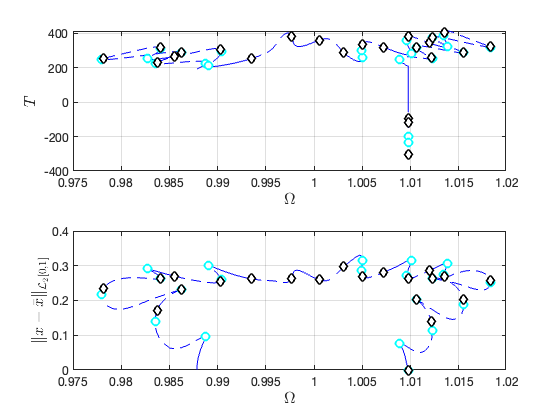
Constructing torus in reduced dynamical system Illustration of the construction of torus in reduced dynamical system Visualization of torus at (omega,epsilon)=(1.004000e+00,1.000000e-02) FRCs from ='HBpo1_tr_cart.po': generating torus in physical domain.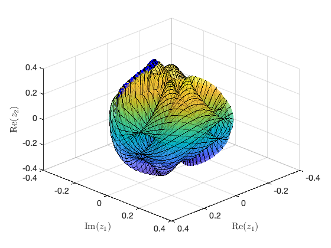 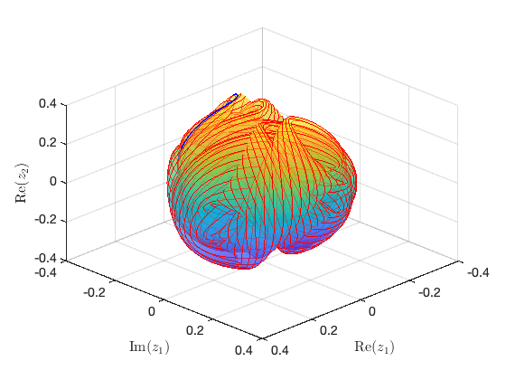
Plot quasiperiodic FRC
FRC of quasi-periodic orbits in physical coordinates
bd = coco_bd_read('HBpo1_tr_cart.po'); labs = coco_bd_labs(bd, 'UZ'); nlab = numel(labs); om = zeros(nlab,1); Tp = zeros(nlab,1); x1amp = zeros(nlab,1); % amplitude of x1(t) st = false(nlab,1); x0 = cell(nlab,1); % cross section of torus at t=0 for i=1:nlab sol = SSM_po_read_solution('HBpo1_tr_cart',labs(i)); om(i) = sol.om; Tp(i) = sol.Tpo; x1i = sol.xTr(:,1,:); x1amp(i) = norm(x1i(:),'inf'); st(i) = sol.st; xx = permute(sol.xTr, [2,3,1]); x0{i} = xx(:,:,1); end
ST = cell(2,1);
ST{1} = {'b--','LineWidth',1.5}; % unstable
ST{2} = {'b-','LineWidth',1.5}; % stable
legs = 'SSM-$\mathcal{O}(3)$-unstable';
legu = 'SSM-$\mathcal{O}(3)$-stable';
thm = struct();
thm.SN = {'LineStyle', 'none', 'LineWidth', 2, ...
'Color', 'cyan', 'Marker', 'o', 'MarkerSize', 8, 'MarkerEdgeColor', ...
'cyan', 'MarkerFaceColor', 'white'};
thm.HB = {'LineStyle', 'none', 'LineWidth', 2, ...
'Color', 'black', 'Marker', 's', 'MarkerSize', 8, 'MarkerEdgeColor', ...
'black', 'MarkerFaceColor', 'white'};
figure; hold on
plot_stab_lines(FRC1.om,FRC1.Aout_frc(:,1),FRC1.st,ST,legs,legu);
SNidx = FRC1.SNidx;
HBidx = FRC1.HBidx;
SNfig = plot(FRC1.om(SNidx),FRC1.Aout_frc(SNidx,1),thm.SN{:});
set(get(get(SNfig,'Annotation'),'LegendInformation'),...
'IconDisplayStyle','off');
HBfig = plot(FRC1.om(HBidx),FRC1.Aout_frc(HBidx,1),thm.HB{:});
set(get(get(HBfig,'Annotation'),'LegendInformation'),...
'IconDisplayStyle','off');
plot(om(st),x1amp(st),'bo','LineWidth',1,'MarkerSize',4); hold on
plot(om(~st),x1amp(~st),'ro','LineWidth',1,'MarkerSize',4); hold on
leg = legend('SSM-po-stable','SSM-po-unstable',...
'SSM-tor-stable','SSM-tor-unstable','Interpreter','latex');
legend boxoff
xlabel('$\Omega$','Interpreter','latex');
ylabel('$||z_1||_{\infty}$','Interpreter','latex');
set(gca,'FontSize',14);
grid on, axis tight; legend boxoff;
axis([0.975,1.02,0.13,0.45])
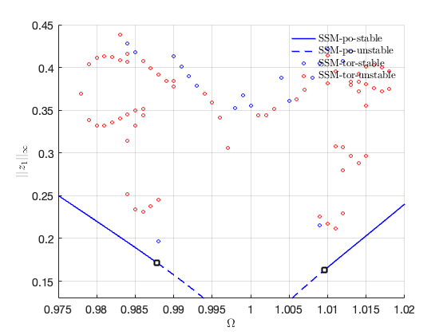 SSM_po2po:
continuation of periodic orbits from saved solution
set(S.contOptions, 'NAdapt', 2, 'PtMX', 100, 'h_max', 5, 'bi_direct', true); set(S.FRCOptions, 'sampStyle', 'cocoBD'); LAB = 3; S.SSM_po2po('po2','HBpo1_tr_cart',LAB, 'amp', epsRange, outdof, 'saveICs');
Run='po2.po': Continue periodic orbits born from saved solution with label 3 of run HBpo1_tr_cart.
STEP DAMPING NORMS COMPUTATION TIMES
IT SIT GAMMA ||d|| ||f|| ||U|| F(x) DF(x) SOLVE
0 2.96e-15 2.79e+02 0.0 0.0 0.0
STEP TIME ||U|| LABEL TYPE eps po.period om
0 00:00:00 2.7877e+02 1 EP 1.0000e-02 1.9712e+02 9.8800e-01
5 00:00:00 2.7729e+02 2 FP 9.8490e-03 1.9607e+02 9.8800e-01
5 00:00:00 2.7714e+02 3 SN 9.8236e-03 1.9597e+02 9.8800e-01
5 00:00:00 2.7614e+02 4 BP 1.0001e-02 1.9526e+02 9.8800e-01
10 00:00:00 2.6008e+02 5 1.0001e-02 1.8390e+02 9.8800e-01
12 00:00:00 2.5424e+02 6 SN 1.0001e-02 1.7977e+02 9.8800e-01
20 00:00:00 2.1008e+02 7 1.0001e-02 1.4854e+02 9.8800e-01
30 00:00:00 1.6008e+02 8 1.0001e-02 1.1319e+02 9.8800e-01
40 00:00:00 1.1008e+02 9 1.0001e-02 7.7834e+01 9.8800e-01
50 00:00:01 6.0094e+01 10 1.0001e-02 4.2479e+01 9.8800e-01
60 00:00:01 1.0191e+01 11 1.0001e-02 7.1235e+00 9.8800e-01
62 00:00:01 1.9696e+00 12 SN 1.0001e-02 8.7073e-01 9.8800e-01
63 00:00:01 1.5372e+00 13 SN 1.0001e-02 -8.8942e-06 9.8800e-01
70 00:00:01 3.9955e+01 14 1.0001e-02 -2.8232e+01 9.8800e-01
80 00:00:01 8.9939e+01 15 1.0001e-02 -6.3587e+01 9.8800e-01
90 00:00:01 1.3993e+02 16 1.0001e-02 -9.8943e+01 9.8800e-01
100 00:00:01 1.8993e+02 17 EP 1.0001e-02 -1.3430e+02 9.8800e-01
STEP TIME ||U|| LABEL TYPE eps po.period om
0 00:00:01 2.7877e+02 18 EP 1.0000e-02 1.9712e+02 9.8800e-01
10 00:00:02 3.0266e+02 19 FP 1.1130e-02 2.1400e+02 9.8800e-01
10 00:00:02 3.0266e+02 20 SN 1.1130e-02 2.1400e+02 9.8800e-01
10 00:00:02 3.0359e+02 21 1.1129e-02 2.1467e+02 9.8800e-01
20 00:00:02 3.5359e+02 22 9.0796e-03 2.5002e+02 9.8800e-01
30 00:00:02 4.0359e+02 23 6.5243e-03 2.8538e+02 9.8800e-01
34 00:00:03 4.2226e+02 24 FP 6.1417e-03 2.9858e+02 9.8800e-01
34 00:00:03 4.2226e+02 25 SN 6.1417e-03 2.9858e+02 9.8800e-01
36 00:00:03 4.3101e+02 26 PD 6.2859e-03 3.0476e+02 9.8800e-01
40 00:00:03 4.5356e+02 27 8.0148e-03 3.2071e+02 9.8800e-01
42 00:00:03 4.5892e+02 28 PD 8.1405e-03 3.2450e+02 9.8800e-01
42 00:00:03 4.6194e+02 29 FP 8.1560e-03 3.2664e+02 9.8800e-01
42 00:00:03 4.6195e+02 30 SN 8.1559e-03 3.2664e+02 9.8800e-01
50 00:00:04 5.0355e+02 31 7.0447e-03 3.5606e+02 9.8800e-01
60 00:00:04 5.5355e+02 32 5.3126e-03 3.9141e+02 9.8800e-01
68 00:00:04 5.9322e+02 33 SN 4.5402e-03 4.1947e+02 9.8800e-01
70 00:00:05 5.9929e+02 34 PD 4.5983e-03 4.2376e+02 9.8800e-01
70 00:00:05 6.0103e+02 35 4.6567e-03 4.2499e+02 9.8800e-01
80 00:00:05 6.0293e+02 36 4.8787e-03 4.2633e+02 9.8800e-01
90 00:00:06 6.0292e+02 37 4.8946e-03 4.2633e+02 9.8800e-01
100 00:00:06 6.0285e+02 38 EP 4.9361e-03 4.2628e+02 9.8800e-01
Constructing torus in reduced dynamical system
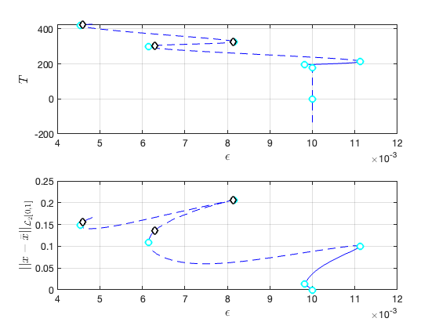Illustration of the construction of torus in reduced dynamical system Visualization of torus at (omega,epsilon)=(9.880000e-01,8.155992e-03) FRCs from ='po2.po': generating torus in physical domain.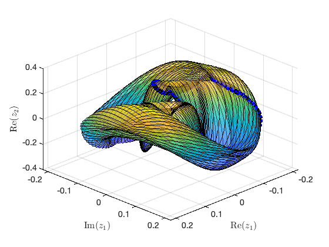 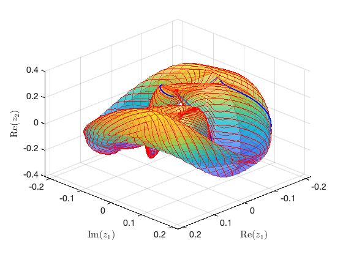
SSM_HB2po:
under variation of
set(S.contOptions, 'PtMX', 100, 'h_max', 0.5, 'bi_direct', false); epsRange = [0.01 10]*epsilon; S.SSM_HB2po('HBpo2_tr_cart','HB_tr_cart',2,'amp',epsRange,outdof,'saveICs');
Run='HBpo2_tr_cart.po': Continue periodic orbits born from a HB point with label 2 of run HB_tr_cart.
STEP DAMPING NORMS COMPUTATION TIMES
IT SIT GAMMA ||d|| ||f|| ||U|| F(x) DF(x) SOLVE
0 6.30e-06 1.14e+02 0.0 0.0 0.0
1 1 1.00e+00 5.83e-05 1.35e-12 1.14e+02 0.0 0.0 0.0
2 1 1.00e+00 5.04e-09 2.38e-15 1.14e+02 0.0 0.0 0.0
STEP TIME ||U|| LABEL TYPE eps po.period om
0 00:00:00 1.1400e+02 1 EP 5.0000e-02 8.0568e+01 9.6773e-01
10 00:00:00 1.1416e+02 2 5.0191e-02 8.0690e+01 9.6773e-01
20 00:00:00 1.1695e+02 3 5.2876e-02 8.2644e+01 9.6773e-01
24 00:00:00 1.1849e+02 4 PD 5.4011e-02 8.3732e+01 9.6773e-01
26 00:00:00 1.1968e+02 5 PD 5.4684e-02 8.4559e+01 9.6773e-01
30 00:00:01 1.2193e+02 6 5.5519e-02 8.6153e+01 9.6773e-01
35 00:00:01 1.2423e+02 7 SN 5.5787e-02 8.7776e+01 9.6773e-01
35 00:00:01 1.2423e+02 8 FP 5.5787e-02 8.7776e+01 9.6773e-01
40 00:00:01 1.2693e+02 9 5.5462e-02 8.9685e+01 9.6773e-01
50 00:00:01 1.3192e+02 10 5.3523e-02 9.3219e+01 9.6773e-01
60 00:00:01 1.3690e+02 11 5.0523e-02 9.6750e+01 9.6773e-01
70 00:00:02 1.4188e+02 12 4.7012e-02 1.0028e+02 9.6773e-01
80 00:00:02 1.4687e+02 13 4.3328e-02 1.0381e+02 9.6773e-01
90 00:00:02 1.5185e+02 14 3.9686e-02 1.0733e+02 9.6773e-01
100 00:00:02 1.5683e+02 15 EP 3.6248e-02 1.1086e+02 9.6773e-01
Constructing torus in reduced dynamical system
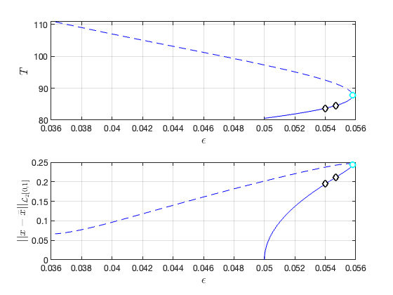 Illustration of the construction of torus in reduced dynamical system Visualization of torus at (omega,epsilon)=(9.677295e-01,5.546229e-02) FRCs from ='HBpo2_tr_cart.po': generating torus in physical domain.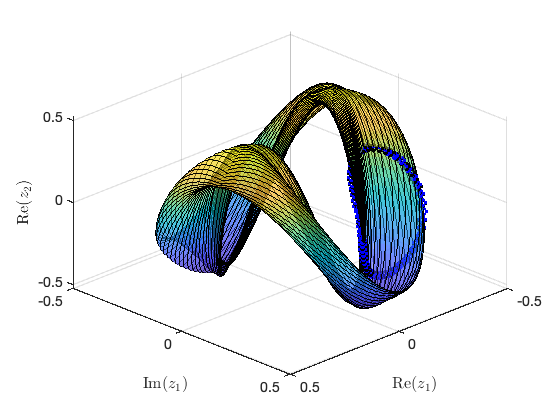 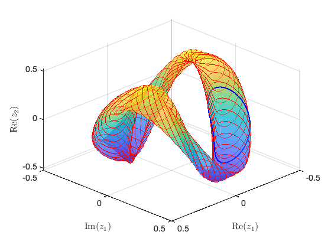
SSM_po2SN:
continuation of Saddle-Node bifurcation periodic orbits
SNLAB = 7; set(S.contOptions, 'TOL', 1e-5); epsRange = [2 8]*epsilon; S.SSM_po2SN('SN','HBpo2_tr_cart',SNLAB,{freqRange,epsRange},outdof,'saveICs');
Run='SN.po': Continue SN periodic orbits from label 7 of run HBpo2_tr_cart.
STEP DAMPING NORMS COMPUTATION TIMES
IT SIT GAMMA ||d|| ||f|| ||U|| F(x) DF(x) SOLVE
0 2.19e-04 4.56e+02 0.0 0.0 0.0
1 2 5.00e-01 2.88e-01 1.36e-04 4.56e+02 0.0 0.0 0.0
2 1 1.00e+00 1.38e-01 8.06e-05 4.56e+02 0.0 0.0 0.0
3 1 1.00e+00 3.02e-03 4.07e-07 4.56e+02 0.0 0.0 0.0
4 1 1.00e+00 6.44e-06 3.97e-07 4.56e+02 0.0 0.0 0.0
STEP TIME ||U|| LABEL TYPE om eps po.period
0 00:00:00 4.5640e+02 1 EP 9.6773e-01 5.5794e-02 8.7769e+01
10 00:00:00 4.6048e+02 2 9.6787e-01 5.5395e-02 8.8122e+01
20 00:00:01 4.6538e+02 3 9.6805e-01 5.4922e-02 8.8545e+01
30 00:00:01 4.7029e+02 4 9.6822e-01 5.4459e-02 8.8966e+01
40 00:00:01 4.7520e+02 5 9.6839e-01 5.4004e-02 8.9383e+01
50 00:00:02 4.8011e+02 6 9.6855e-01 5.3558e-02 8.9799e+01
60 00:00:02 4.8502e+02 7 9.6871e-01 5.3120e-02 9.0211e+01
70 00:00:03 4.8969e+02 8 9.6887e-01 5.2712e-02 9.0601e+01
80 00:00:03 4.9403e+02 9 9.6901e-01 5.2339e-02 9.0961e+01
90 00:00:04 4.9894e+02 10 9.6916e-01 5.1923e-02 9.1367e+01
100 00:00:04 5.0386e+02 11 EP 9.6931e-01 5.1514e-02 9.1770e+01
Constructing torus in reduced dynamical system
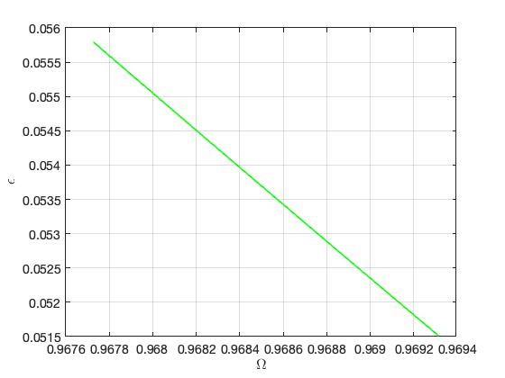 Illustration of the construction of torus in reduced dynamical system Visualization of torus at (omega,epsilon)=(9.677269e-01,5.579409e-02) FRCs from ='SN.po': generating torus in physical domain.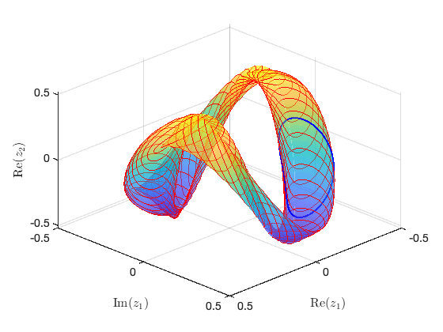
SSM_po2PD:
continuation of Period-doubling bifurcation periodic orbits
PDLAB = 4; set(S.contOptions, 'h_min', 0.01, 'bi_direct', true, 'TOL', 1e-6); S.SSM_po2PD('PD','HBpo2_tr_cart',PDLAB,{freqRange,epsRange},outdof,'saveICs');
Run='PD.po': Continue PD periodic orbits from label 4 of run HBpo2_tr_cart.
STEP DAMPING NORMS COMPUTATION TIMES
IT SIT GAMMA ||d|| ||f|| ||U|| F(x) DF(x) SOLVE
0 1.51e-07 1.20e+02 0.0 0.0 0.0
STEP TIME ||U|| LABEL TYPE om eps po.period
0 00:00:00 1.1982e+02 1 EP 9.6773e-01 5.4011e-02 8.3732e+01
10 00:00:00 1.1661e+02 2 9.6674e-01 5.6565e-02 8.1437e+01
20 00:00:01 1.1201e+02 3 9.6519e-01 6.0623e-02 7.8153e+01
30 00:00:01 1.0738e+02 4 9.6349e-01 6.5211e-02 7.4863e+01
40 00:00:02 1.0344e+02 5 9.6190e-01 6.9583e-02 7.2064e+01
50 00:00:03 9.8531e+01 6 9.5971e-01 7.5722e-02 6.8579e+01
57 00:00:03 9.5884e+01 7 EP 9.5822e-01 7.9999e-02 6.6406e+01
STEP TIME ||U|| LABEL TYPE om eps po.period
0 00:00:03 1.1982e+02 8 EP 9.6773e-01 5.4011e-02 8.3732e+01
10 00:00:04 1.2059e+02 9 9.6796e-01 5.3433e-02 8.4282e+01
20 00:00:05 1.2475e+02 10 9.6913e-01 5.0533e-02 8.7284e+01
24 00:00:05 1.2525e+02 11 MX 9.6926e-01 5.0221e-02 8.7648e+01
Constructing torus in reduced dynamical system
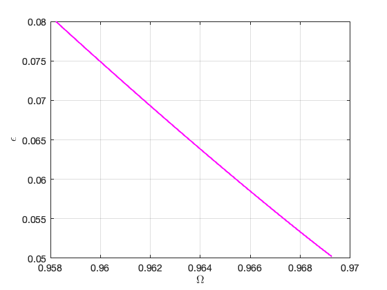 Illustration of the construction of torus in reduced dynamical system Visualization of torus at (omega,epsilon)=(9.582154e-01,7.999920e-02) FRCs from ='PD.po': generating torus in physical domain.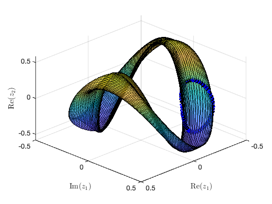 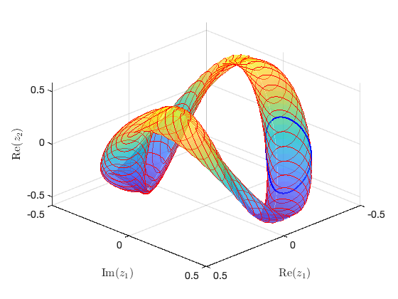